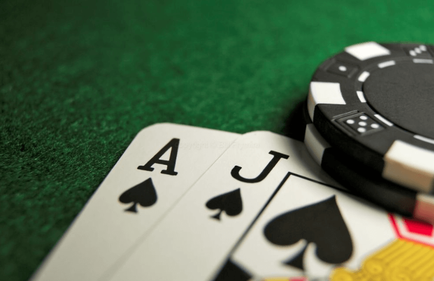
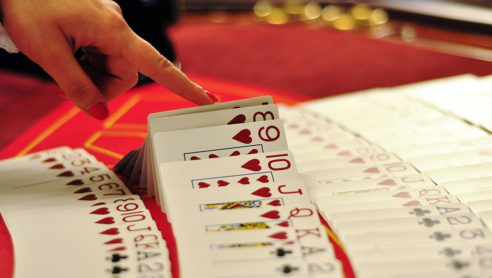
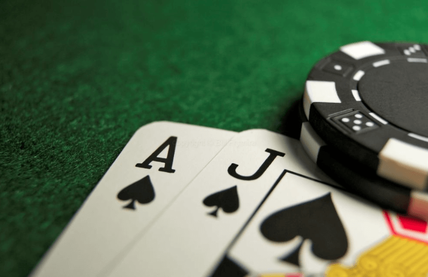
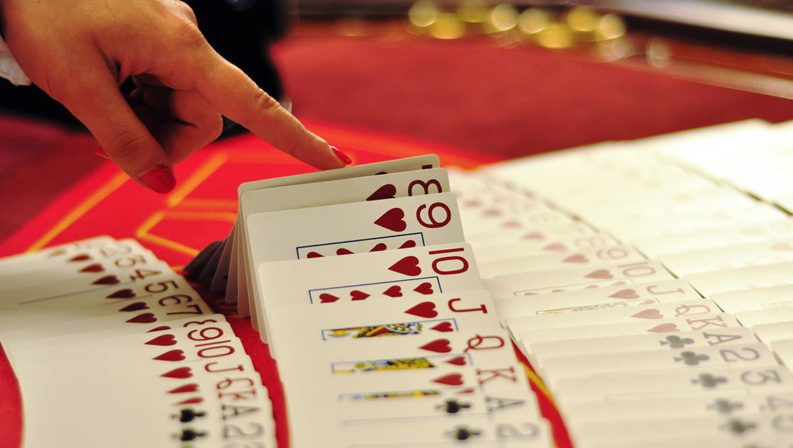

Simulación de Contar Cartas
Hace no mucho me interesé por cómo
contar cartas en Blackjack para ganar
contra casinos, y dejando de lado todo
lo que tiene y lo que no, constantemente
me preguntaba:
¿De verdad esto funcionará?
Ahí es cuando recordé que soy programador y que
puedo perfectamente simular millones de partidas de
Blackjack contando cartas para averiguar si realmente
funciona o no, y así es como nació este proyecto.
Programación
El apartado de programación de este
proyectos fue especialmente divertido, no sé
muy bien porqué.
Supongo que programar simulaciones es bastante
divertido y me he dado cuenta ahora, pero sí,
implementar todas las reglas del Blackjack
correctamente fue bastante divertido.
Resultados
Tras acabar el proyecto, mis teorías fueron
confirmadas. Empezando con 10.000€ y jugando
aproximadamente 1.000.000 de rondas de
Blackjack, la simulación devolvía constantemente
unos 13.000.000€.
Esto, si mi código es correcto, significa que contar
cartas sí funciona. Eso sí, teniendo en cuenta que los escenarios
son bastante favorables: no todo el mundo empieza a contar
cartas con 10.000€, y no estamos teniendo en cuenta las veces
que se arruina.
Si alguien quiere hecharle un vistazo al proyecto dejo
aquí el link del repositorio de Github:
https://github.com/Nestea009/CountingCards